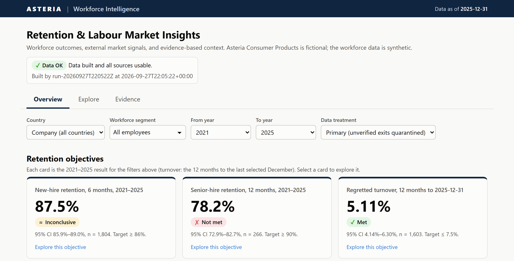
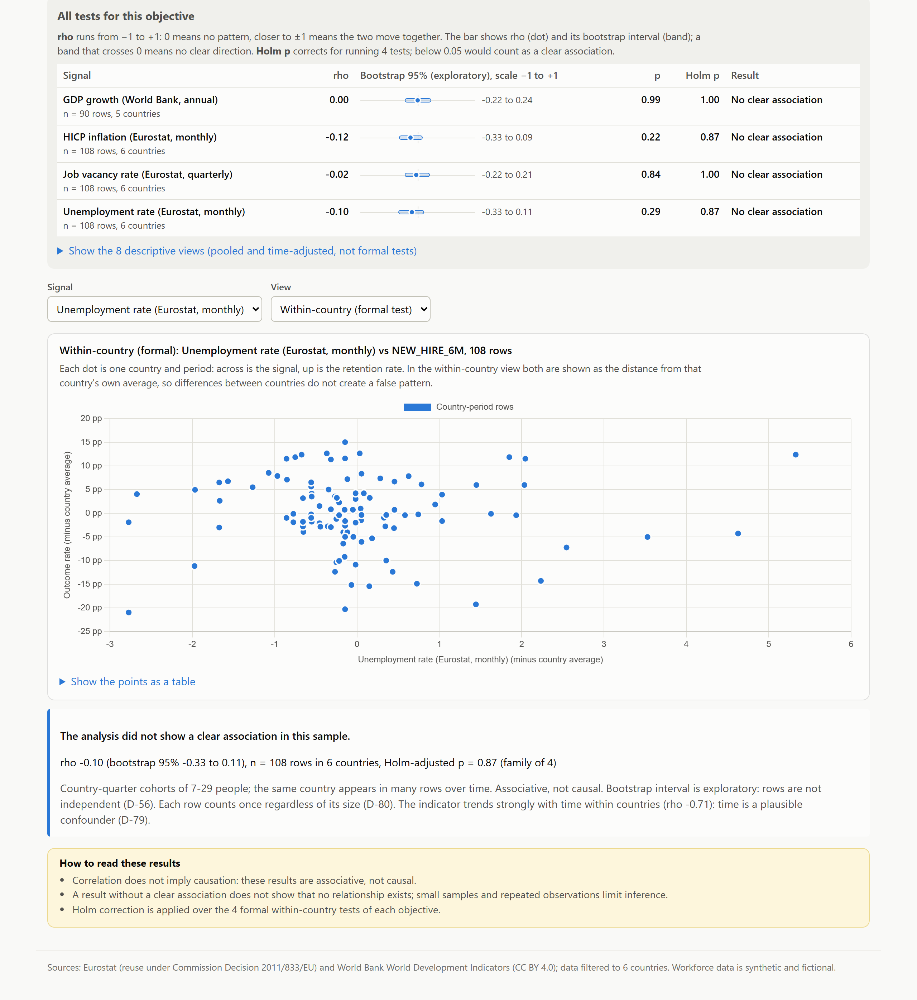

Agentic Engineering Assessment · Software emphasis
A small, defensible data product: three retention objectives for Asteria Consumer Products in six countries, placed next to four official labour-market signals, with what can and cannot be concluded.
Bishoy Mokhless · repository: github.com/Bishoy-Mokhless/Agentic-Engineering-Assessment
Problem refinement · 3 min
Decision supported: is each objective on track, and do external conditions add useful context, without over-claiming?
| Objective | Target | Our definition |
|---|---|---|
NEW_HIRE_6M | ≥ 86% | still employed 6 calendar months after hire; any exit counts; hires whose window ends after 2025-12-31 are not yet measurable (D-16…D-18) |
SENIOR_HIRE_12M | ≥ 90% | same with 12 months; senior = Senior Leader, a setting (D-14, D-94) |
REGRETTED_TURNOVER_12M | ≤ 7.5% | confirmed regretted exits in 12 months ÷ average of 13 month-end headcounts; verdict on December values (D-20, D-37) |
Problem refinement · 3 min
| Issue | Rows | Rule |
|---|---|---|
| Repeated employee rows | 7 | keep latest update, log (D-07) |
Country EL, ROM / blank | 8 / 9 | map to GR, RO / company totals only (D-08) |
Level Sr Mgmt | 10 | → Senior Leader (D-13) |
| No hire date / left before hire | 5 / 5 | excluded, listed (D-09) |
| Blank exit type, exactly 90 days after hire | 12 | quarantined + sensitivity (D-10) |
| Blank "regretted?" on an exit | 2 | UNKNOWN, never "no" (D-12) |
Uncertain data is preserved, flagged and quarantined from the primary number; never deleted or imputed; its impact is shown by sensitivity analysis.
2,407 rows → 2,400 employees: 2,378 included · 12 quarantined · 10 excluded.
Assumptions (senior level, Sr Mgmt, 90-day exits, population since 2020) are documented, and checked: no verdict changes under any of them.
Architecture · 5 min
FLOW A retention run (batch job) FLOW B retention serve (web app)
Eurostat API ─┐ Browser: dashboard/index.html + app.js
World Bank API┼─> ingest ─> data/raw/ untouched │ GET /api/...
HR CSV files ─┘ │ ▼
▼ curate api/routers/*.py controllers
data/curated/source_shaped/ provider shape ▼
▼ service/dashboard_queries.py service
data/curated/canonical/ clean + flags ▼
▼ metrics (SQL) · analyse repository/curated_store.py repository
data/curated/analytical/ objectives, ───────────────> reads data/curated/*
time join, tests
client/ adapters · pipeline/ steps · service/ rules · repository/ storage · sql/ metrics · api/ controllers · domain/ contracts
Python 3.11 · pandas · DuckDB SQL on Parquet · FastAPI · HTML + Chart.js · pytest + Playwright
retention run (offline from committed snapshots, under a minute) · retention serve
Architecture · lineage and reliability · 5 min
payload.json + metadata.json (URL, time, SHA-256); latest.json points to the one to use (D-48)--refresh fetches (D-66, D-68)data/.tmp/<run_id>, publish only if every step succeeds; a failed run leaves the dashboard untouched_build.json per layer (run id, inputs, outputs, checksums); every HR row keeps its CSV line numberFollowing one employee, ACP001733:
| Layer | Becomes |
|---|---|
| raw CSV line 1734 | ROM, hired 2024-09-17, left 2025-01-28, voluntary, regretted |
| source-shaped | same values, ROM kept |
| canonical | RO (source ROM), flag COUNTRY_CODE_MAPPED, logged D-08 |
| hire_outcomes | window ends 2025-03-17 → not retained |
| cohorts / turnover | inside 87.5% and inside the 82 regretted exits of 2025 |
Architecture · temporal alignment · 5 min
period end + lag; lags measured from the APIs and rounded up: monthly +2, quarterly +3, annual +7 months (D-29, D-58)Limitation: APIs return today's revised values, not historical vintages.
| RO 2024-Q3 cohort, as of 2024-07-01 (82.1%, 28 hires) | |||
|---|---|---|---|
| Signal | Value used | From | Why not newer |
| Unemployment | 5.2% | 2024-04 | May usable only from 31 Jul |
| HICP inflation | 6.2% | 2024-04 | same |
| Job vacancy rate | 0.7% | 2024-Q1 | Q2 usable from 30 Sep |
| GDP growth | 4.19% | 2022 (19 months old) | 2023 usable from 31 Jul 2024 |
Architecture · quality of the engineering · 5 min
cleaning rules, parsing, the metric SQL on hand-made tables, Wilson and verdicts, no-future-information join, association statistics, contracts, ingest statuses
every endpoint via TestClient on data built by the real offline pipeline; 400 / 404 / 503 errors
views, filters, empty and error states, API outage, keyboard tabs, table twins of every chart
ruff lint + format; 12 acceptance criteria mapped to tests (docs/requirements_refinement.md)Dashboard · 4 min

| Brief | Dashboard |
|---|---|
| Explore | Explore › Objective detail |
| Understand | Explore › Market signals |
| Challenge | Explore › Relationships |
| Trust | Evidence |
Key findings · 4 min
208/266, CI 72.9–82.7% vs ≥ 90%. Not met every year 2021–24, in all 6 segments, and even if Managers count as senior (81.3%).
1,579/1,804, CI 85.9–89.0% includes 86%. Met for Permanent (88.0%) and Manager (91.1%) hires. 148 of 225 early leavers left voluntarily.
82 / 1,603 in 2025 vs ≤ 7.5%, but up from 3.30% in 2024; RO 6.7%, IE 6.3%, BG 6.1% inconclusive.
Non-finding: none of the 12 formal within-country tests shows a clear association after Holm correction. Turnover vs inflation: p = 0.03 alone, 0.12 after correcting for 4 tests. Unemployment trends with time (ρ −0.71): a plausible confounder. Associative, never causal.
Data health: counting the 12 unverified exits or the unknown "regretted" values changes no verdict.
Dashboard · challenge the relationship · 4 min

Trade-offs · 3 min
Sr Mgmt, 90-day exits), each shown not to change a verdictAI usage · 3 min
JOBRATE returned zero values → JVR| Agent suggested | I decided |
|---|---|
| Data emphasis | Software emphasis (D-01) |
| Streamlit | HTML + Chart.js (D-04) |
| Static JSON | FastAPI service (D-05) |
| 90-day exits as placeholders | quarantine + sensitivity (D-10) |
| Unknown regretted = "no" | keep UNKNOWN (D-12) |
| Test new-hire only | all three, with a hierarchy (D-35) |
| 8-test Holm families | 4 within-country tests (D-55) |
| A distinctive redesign | rejected after seeing it (D-85) |
Next steps · 3 min
Sr Mgmt, 90-day exits, full workforce)Summary
The external signals show no clear association in this sample, and every number carries its uncertainty, its lineage and the assumptions it rests on.
Questions · repository README · docs/ · AI_USAGE.md